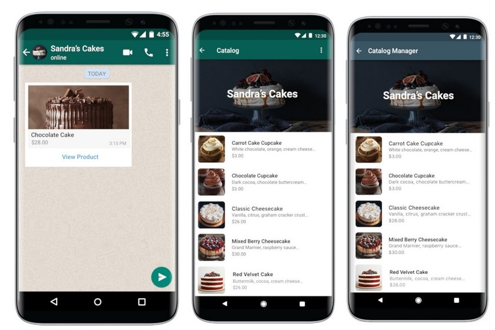
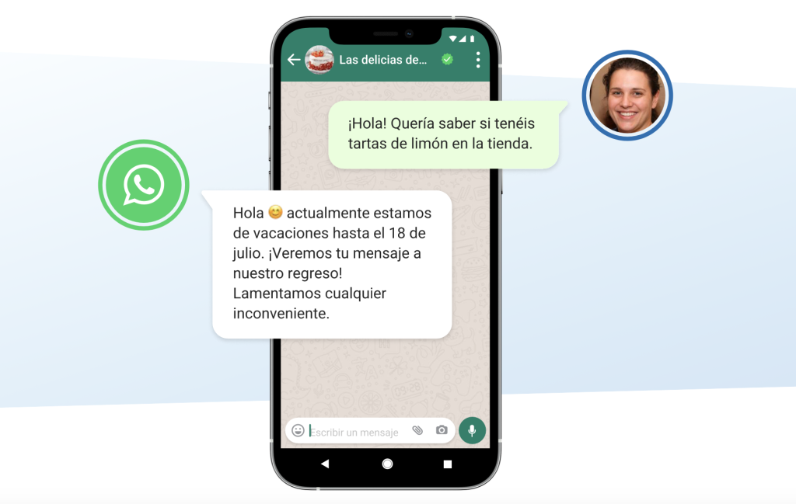
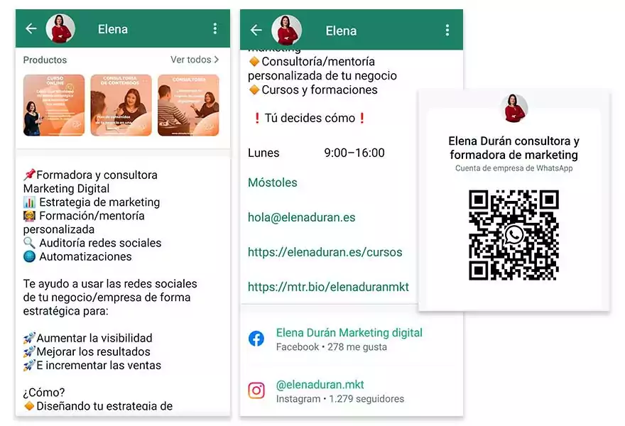
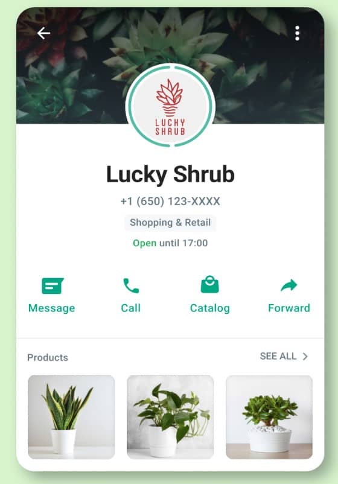

Convierte tu WhatsApp Business en una herramienta real de ventas
Optimizamos tu perfil, catálogo y mensajes para que tus clientes confíen y compren de inmediato
Optimizamos tu perfil, catálogo y mensajes para que tus clientes confíen y compren de inmediato
Descubre los errores críticos que podrían estar costándote clientes todos los días
Los clientes de hoy son visuales y quieren inmediatez. Si no tienes un catálogo organizado, con fotos atractivas y precios claros dentro de WhatsApp, obligas al usuario a salir de la app o a preguntar manualmente. Cada paso extra es una oportunidad para que abandonen la compra.

En el entorno digital, el tiempo se mide en segundos. Si un cliente interesado te escribe y tardas más de 15 minutos en responder, buscará inmediatamente a tu competencia. Sin mensajes de bienvenida, ausencia o respuestas rápidas automatizadas, estás regalando tus ventas de manera diaria.

Un perfil de WhatsApp Business que no muestra un horario comercial claro, dirección, correo o enlaces directos genera fricción. Las descripciones vagas provocan dudas en el usuario, obligándolo a hacer demasiadas preguntas iniciales en lugar de ir directo al grano para cerrar el pedido.

La foto de perfil pixelada, logotipos recortados o respuestas con faltas de ortografía destruyen la confianza. Tu WhatsApp es el mostrador digital de tu negocio; si luce descuidado, tus clientes asumirán que tu producto o servicio también lo es. Una imagen pulida incrementa tu tasa de conversión exponencialmente.

No dejes que tu WhatsApp siga espantando el dinero. Déjanos solucionarlo por ti.
Solicitar revisión gratuita